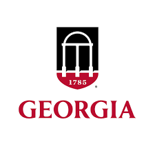

Project Management Semester Consulting Project
Worked with classmates to help UGA's Period Project Club create a website for their organization.
Attended meetings with stakeholders in order to understand and communicate about the expected aspects of the website.
Created documents for the scope statement, budget summary, overall project summary, and many more.
Business Process Management Project
Created a revised business process model for the current and future healthcare system with hospitals.
Worked with classmates to create supporting documents for the time changes of our corrections and why we had suggested each change.
Software Development Project
Created programs using Java along with HTML and other Java edxtensions to create programs that companies would be able to find recipes.
The recipe list would help companies to compare them to the health benefits from grocery store websites.